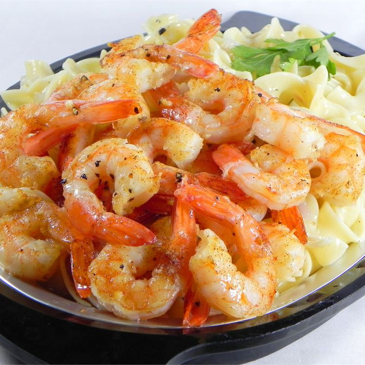

Home
Shrimp Scampi

Description:
Very simple shrimp Scampi in an oven
Ingredients:
- 30 medium shrimp - peeled and deveined
- 2 tablespoons olive oil
- 2 tablespoons butter, melted
- 2 garlic cloves, minced
- 1/4 teaspoon salt
- 1/4 teaspoon ground black pepper
Steps:
- Preheat an oven to 175C
- Toss the shrimp in a bowl with the olive oil,
melted butter, garlic, salt, and pepper; set aside
for 10 minutes. Arrange the shrimp in a circular pattern in
a round casserole dish.
- Bake in the preheated oven until the shrimp are pink and
cooked through, about 15 minutes.
Home